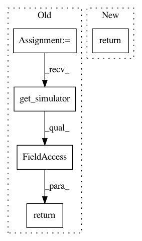

d19ddd7bba3bfac4b763104d5e5d6a06efce1a5a,spynnaker/pyNN/spynnaker_external_device_plugin_manager.py,SpynnakerExternalDevicePluginManager,time_scale_factor,#,252
Before Change
@staticmethod
def time_scale_factor():
_spinnaker = globals_variables.get_simulator()
return _spinnaker.timescale_factor
After Change
@staticmethod
def time_scale_factor():
return get_simulator().timescale_factor
In pattern: SUPERPATTERN
Frequency: 3
Non-data size: 5
Instances
Project Name: SpiNNakerManchester/sPyNNaker
Commit Name: d19ddd7bba3bfac4b763104d5e5d6a06efce1a5a
Time: 2017-12-14
Author: donal.k.fellows@manchester.ac.uk
File Name: spynnaker/pyNN/spynnaker_external_device_plugin_manager.py
Class Name: SpynnakerExternalDevicePluginManager
Method Name: time_scale_factor
Project Name: SpiNNakerManchester/sPyNNaker
Commit Name: d19ddd7bba3bfac4b763104d5e5d6a06efce1a5a
Time: 2017-12-14
Author: donal.k.fellows@manchester.ac.uk
File Name: spynnaker/pyNN/spynnaker_external_device_plugin_manager.py
Class Name: SpynnakerExternalDevicePluginManager
Method Name: machine_time_step
Project Name: SpiNNakerManchester/sPyNNaker
Commit Name: 5795af03c5842f6d7c77e29e146cfe960df3bceb
Time: 2017-12-05
Author: christian.brenninkmeijer@manchester.ac.uk
File Name: spynnaker/pyNN/models/common/neuron_recorder.py
Class Name: NeuronRecorder
Method Name: get_sampling_interval